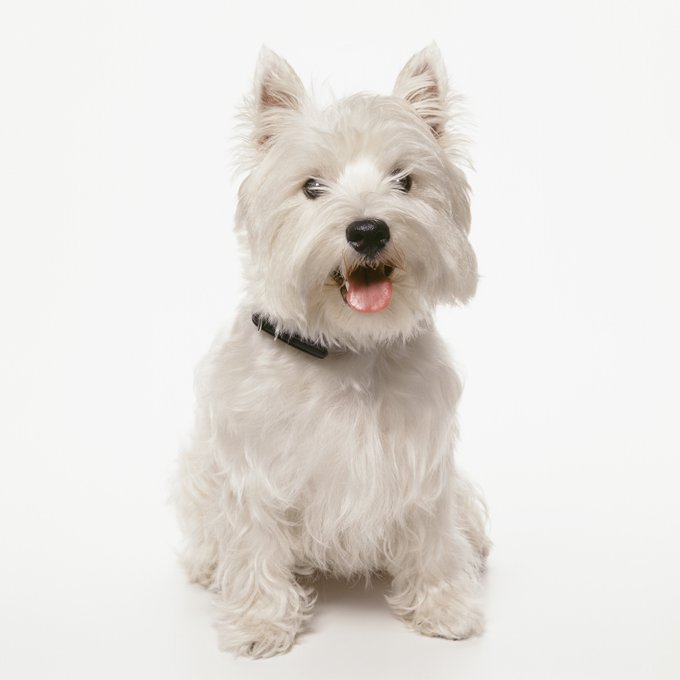

The dog is such a great animal because they are lifelong companions that remain loyal to their owners. When raised right, they give the love back that they receieve in spades whether it is by being by your side or by showing affection in many ways. They are simple creatures that respond to affection by giving it back. No other animal truly becomes part of the family like the dog does. Dogs can take the simplest of activities like going for a walk and make it a daily highlight.
